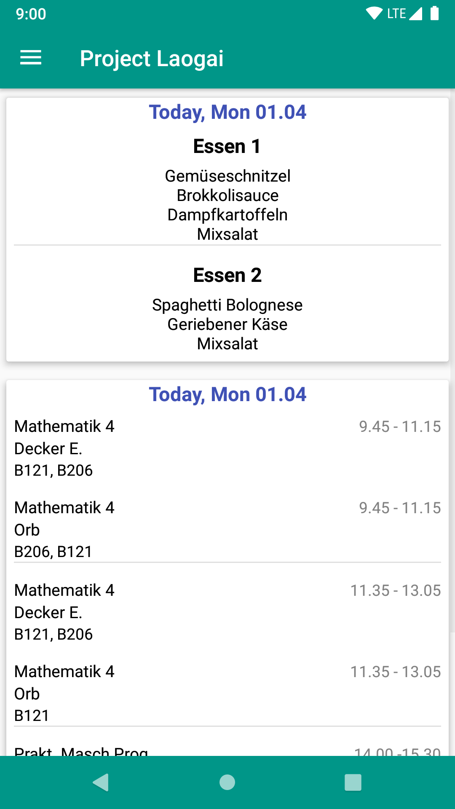
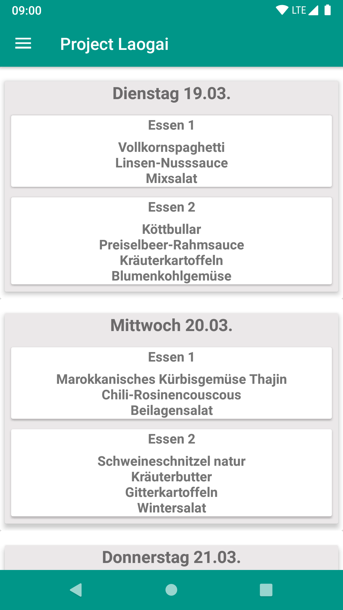
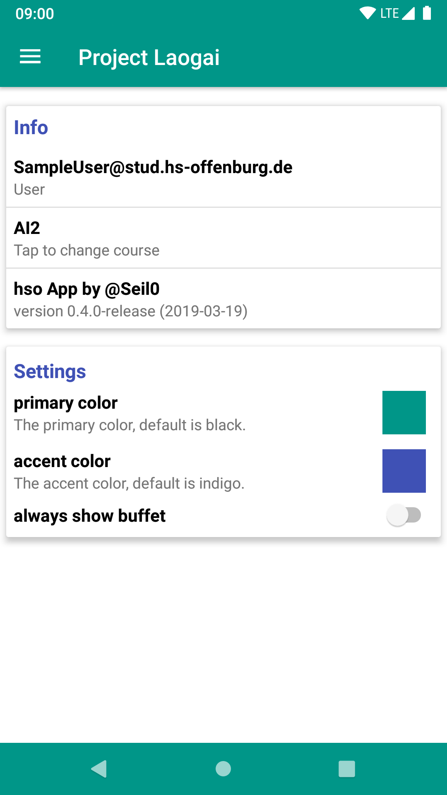
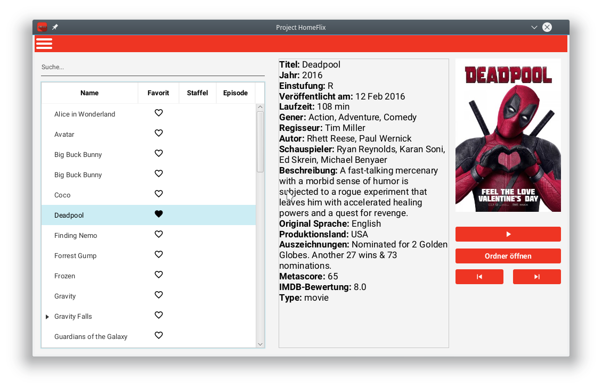

ProjectLaogai
ProjectLaogai ist eine Android App um den Vorlesungsplan und das Mensa-Essen der Hochschule Offenburg anzuzeigen.
Du wolltest schon immer eine App, die deinen Vorlesungsplan in einem für Menschen lesbaren Format anzeigt? ProjectLaogai tut genau dass! Sag Tschüss zur alten Hochschul-App und Hallo zu einer neune und moderenen Variante. Neben deinem Vorlesungsplan kannst du noch den Speiseplan der Mensa anschauen und mit einem click moodle besuchen.
Features
- schaue was es diese und nächste Woche in der Mensa zu Essen gibt
- schaue dir deinen Vorlesungsplan an
- öffne moodle direkt in der App
- 100% vegan
- viele lustige Bugs
Screenshots
  ActionPi
ActionPi. Das steht für unendlich Möglichkeiten. Volle Kamera-Ansteuerung, RAW-Video und Foto, direkt Upload im Internet, Gesichtserkennung und viele weiter Features.
Eine Kamera zum selbst bauen? Geht nicht? - funktioniert sogar wunderbar! Die ActionPi ist eine selbstgebaute Kamera auf Basis eines Raspberry Pi Modell A+ und einer 5 MPixel picamera. Gesteuert wird die ActionPi über ein in C++ geschriebenes Programm, welches sämtliche Funktionen wie Einstellungsmenü, Bildbetrachter und die Aufnahmefunktione bereit stellt.
- 5 MPixel oder 8 MPixel
- OpenCV
- 18Wh Li-ion Akku
- 2A Schnelllader per USB
- 4,3 Zoll Display
- HDMI Ausgang
- Linux Kernel 4.4
- 32GB Systemspeicher
- USB Host für Foto und Video abspeichern bis zu 4TB
- Unterstützt die "Design rule for Camera File system"
- Wahlweise mit GUI oder ohne GUI
ActionPi Teaser
Project-HomeFlix
Project-HomeFlix ist ein Programm welches es dir ermöglicht alle Filme eines Ordner übersichtlich in einer modernen UI darzustellen und die gewünschten Filme abzuspielen. Zusätzlich werden noch Informatione aus der Internet Movie Database angezeigt. Hierfür wird die OMDb API verwendet.
Screenshots

xpFTP
xpFTP ist ein zukünftiges mosad Projekt. XpFTP ist ein cross Plattform ftp client der auf dem QT-Framework basiert.
über uns
mosad steht für "Manufacturer for open source application development" und beschreibt ziemlich genau was wir tun. Die wichtigste Voraussetzung all unserer Projekte ist deren Offenheit und Transparenz.